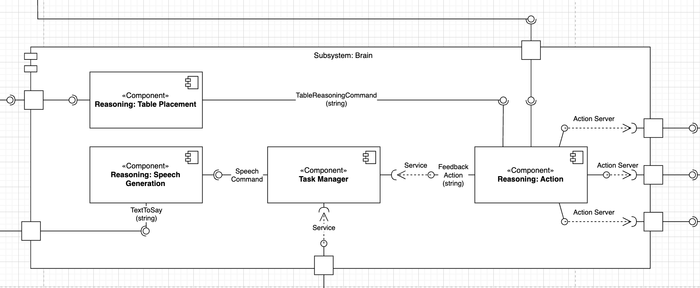

Subsystem Brain
What the “Brain” does
The Brain is the central decision-making layer of each TIAGo robot. It takes in high-level customer intent (orders parsed from speech), real-time context (table occupancy, robot locations, task queue state), and execution feedback (navigation and manipulation results) and synthesises a coherent, ordered plan of actions for the robot to follow.
Its responsibilities include:
Task arbitration Polling the central /robot_state_decision service to claim and sequence tasks in a multi-robot fleet, ensuring no two robots attempt the same table at once.
Motion planning handoff Emitting a minimal global path (via /planned_path) and table commands (PLACE/CLEAR) so that downstream navigation and manipulation layers can take over.
Manipulation choreography Orchestrating a tight sequence of ActionLib goals (base move → arm motion → gripper open/close), recovering from failures or pre-emptions gracefully.
Customer interaction timing Buffering and throttling spoken notifications (e.g. “Your sushi is here”) so that announcements occur at natural breakpoints without overlapping.
Design Patterns
Strategy
In our Brain subsystem, Reasoning Action uses Strategy to encapsulate different table-placement and clearing heuristics. For example, we can swap in a FindPlacementStrategy for simple “place-if-space” logic or a more sophisticated “optimal-object-arrangement” strategy without touching the orchestrator’s core. This keeps placement logic extensible and decoupled from high-level task sequencing.
Observer
Task Manager subscribes to /task_feedback and immediately reacts whenever a controller publishes status (e.g. “BASE_DONE” or “ARM_ABORTED”). Rather than polling, it receives push notifications and can call /robot_state_decision as soon as a state change occurs. This event-driven design keeps orchestration responsive and avoids unnecessary spinning loops.
Adapter
Reasoning Table Placement takes a raw decision string—like “Decision: PLACE, IGNORE”—and adapts it into the exact motor command (“PLACE_DISH”, “CLEAR_TABLE”, or “NO_ACTION”). By centralizing this translation, the cognitive layer and the manipulation drivers remain isolated: we can change the downstream command alphabet without touching the decision logic.
Template Method
Reasoning Speech Generation implements a fixed two-step loop—cache the latest text command, then publish it at 1 Hz—while leaving the details of caching or latching to its own methods. If we later need a variant that gates announcements by context or adapts the rate, we override just those hook methods, not the entire republishing flow.
{kind=link}
Component roles
Reasoning Action - Receives a nav_msgs/Path (first waypoint) and a table-command string. - Sends a sequence of three ActionLib goals (Command pattern):
MovementControlAction (drive to the table)
ArmControlAction (lower/lift arm)
GripperControlAction (open/close)
Monitors feedback at each stage and retries or aborts on error.
Reasoning Table Placement - Subscribes to /placement_decision and applies a substring match. - Maps “PLACE” → “PLACE_DISH”, “CLEAR” → “CLEAR_TABLE”, others → “NO_ACTION”. - Adapts the high-level decision into a ROS command (Adapter pattern) and publishes to /table_reasoning_commands.
Task Manager - Observes /task_feedback messages (Observer pattern) from controllers (e.g. “BASE_DONE”, “ARM_DONE”). - Caches the latest state and calls the /robot_state_decision service with it. - Receives the next high-level task (order ID + dish list) and hands it to Reasoning Action.
Reasoning Speech Generation - Subscribes to /task_speech_command (text) and caches the latest message. - Runs a 1 Hz republish loop (Template Method) to /speaker_channel, ensuring at most one announcement per second. - Uses ROS latching so late subscribers still receive the current sentence.
ROS interfaces & KPIs
Topic / Service |
Type |
KPI / Note |
|---|---|---|
`/planned_path` → Reasoning Action |
nav_msgs/Path |
First waypoint within 0.5 m of true goal; end-to-end latency ≤ 500 ms |
`/table_reasoning_commands` ← Table Placement |
std_msgs/String |
Commands must be issued within 200 ms of decision change |
`/task_feedback` (out) |
std_msgs/String |
Propagate controller state changes within 200 ms |
`/robot_state_decision` (srv) |
tiago1/robotstatedecision |
Service response time ≤ 100 ms, ≥ 99.9 % success rate |
`/speaker_channel` (out) |
std_msgs/String |
Announcements delivered ≤ 1 s after cognitive request |
Implementation modules
Detailed API docs for each Brain component can be found below.
Brain Components